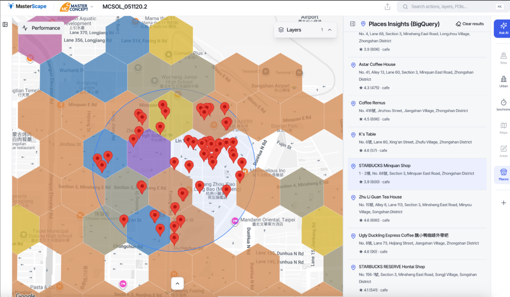

Jun 2026–present
GeoAI & Location Intelligence
Map AI Solutions Engineer Intern · Master Concept · Hong Kong

Research motivation
How can spatial intelligence support better location decisions?
Mapping projects across different geographic contexts made me interested in the gap between methods developed with rich research datasets and the data available in practice. I aim to connect heterogeneous geographic evidence to location decisions while accounting for differences in data availability and quality.
Work & methods
- Integrate Google Maps Places Insights with population, POI and mobility data for spatial analysis across cities.
- Build consumer profiles and analyse spatial demand to support site-selection and transportation decisions.
- Develop reusable spatial analysis workflows that can be adapted to different cities and data sources.
- Develop a GeoAI database for a telecommunications company to support network optimisation and privacy-preserving analysis of mobility data.